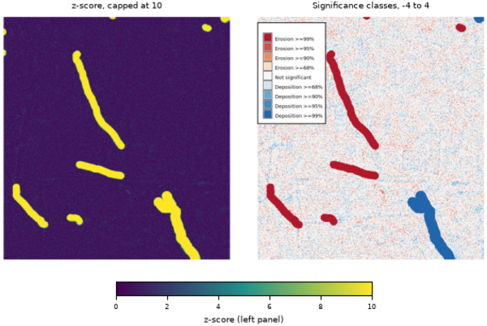

r.dem.errprop propagates per-source vertical uncertainty into a DEM of Difference (DoD) and derives change-significance products from the combined uncertainty. It is the analytical core of a DoD workflow: it answers how much of the measured elevation change is real rather than measurement noise.
Given a DoD raster and one or more uncertainty (1 sigma) rasters, the tool combines the uncertainty sources in quadrature:
sigma_DoD = sqrt(sigma_1^2 + sigma_2^2 + ... + sigma_n^2)
Cells where any source is NULL are left NULL, so the propagated uncertainty is only defined where every contributing source is defined. Typical sources are a vertical-accuracy raster for each input DEM (for example derived from land-cover class), plus optional co-registration or interpolation error terms.
The sigma_const option adds constant 1-sigma terms (meters) to the same quadrature as the sigma rasters. All sigma sources must be independent of the DoD being tested: deriving the uncertainty from the DoD itself (for example a windowed dispersion of the same map) inflates sigma exactly where change is real and suppresses its significance. Use the combined sigma from r.dem.lod (output_sigma) or independent error budgets.
From the propagated output_sigma the tool can additionally produce:
LoD = z(confidence) * sigma_DoD, where z is the
two-tailed normal critical value. Cells of the DoD whose magnitude exceeds the
LoD are considered significant change.|DoD| / sigma_DoD
(sigma is treated as known, so the statistic is z-based rather than
Student-t; the magnitude discards the sign of change).The categorical output uses signed integer classes:
| Class | Meaning | Class | Meaning |
|---|---|---|---|
| -4 | Erosion ≥99% | 1 | Deposition ≥68% |
| -3 | Erosion ≥95% | 2 | Deposition ≥90% |
| -2 | Erosion ≥90% | 3 | Deposition ≥95% |
| -1 | Erosion ≥68% | 4 | Deposition ≥99% |
| 0 | Not significant |
Category labels and a diverging color table are written automatically.
The propagated uncertainty raster pairs naturally with r.dem.change, which applies an LoD threshold and reports volumetric change. The output_sigma raster can be supplied to r.dem.lod as a precomputed uncertainty surface.
confidence must be strictly between 0 and 1; the normal critical value is infinite at 1 and zero at 0.5.
The tool requires the Python scipy package.
The commands below use the example scene built in the r.dem toolset manual, which is derived from the North Carolina sample dataset. Build it there first.
Turn the combined 1-sigma surface from r.dem.lod into significance products:
g.region raster=elev_lid792_1m
r.dem.errprop dod=dod_debiased sigma=sigma_combined \
output_sigma=sigma_dod output_lod=lod_95 \
output_zscore=zscore output_class=significance confidence=0.95
The z-score raster is exactly |DoD| / sigma, and the class raster spans
-4 to 4 across the four confidence levels in both directions.
The local sigma from r.dem.lod is undefined wherever no stable cell falls inside the window, and on this scene that includes the interior of the change features. Those cells stay NULL through the propagation, which is deliberate: a cell whose uncertainty is unknown is untestable. Where the whole map has to be classified, fall back to the flight-wide sigma:
r.mapcalc "sigma_filled = if(isnull(sigma_combined), 0.0890, sigma_combined)"
r.dem.errprop dod=dod_debiased sigma=sigma_filled \
output_sigma=sigma_dod output_class=significance
Combine several independent uncertainty sources, including constant terms, and use a Student-t distribution for the p-value:
r.dem.errprop dod=dod_debiased sigma=sigma_combined,bias_se \
sigma_const=0.05 output_sigma=sigma_total \
output_pvalue=pvalue pmethod=student df=120

Corey T. White, Center for Geospatial Analytics, NC State University
{kind=link}